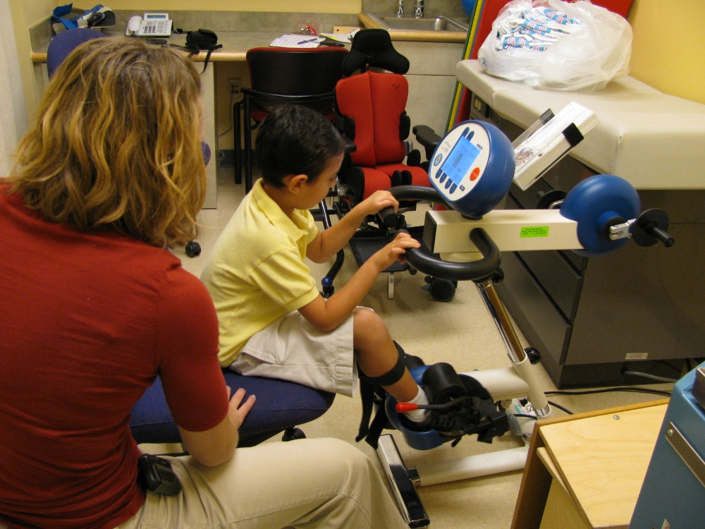

Who they are: "Act4Me is an all volunteer 501(c)(3) non profit organization established in Miami-Dade County, Florida, helping local children with neurological disorders and developmental delay get the therapy they need.” (from their website)
What they need: More funding so they can continue sponsoring children’s therapy, more volunteers.
Quote: "Thank you for the trust Timmy and Friends has given the Act4Me Foundation. This means a lot to us. As a matter of fact, it cheers our hearts to see your new generation so involved, following prior steps, and trying to do it even better. I want to congratulate all of you on the desire and the drive you all have to help change our world and to, one step at a time, improve it's vision of the disabled community. It is simply awesome! Working together on improving the lives of children with disabilities, allowing them to show their abilities & not be limited by their disabilities is exciting and we wish you long success, around the world and the universe!
Timmy and Friends being a supporting foundation providing additional funding to Act4Me will be of great help to Act4Me to fulfill our mission. We are always in need of additional funding as there is no limit on love, help, and the families we can support. This will allow us to help more special needs children in Miami Dade County and provide provided them with the speech, occupational and physical therapies they need daily in order to progress through their lifetime journey. Together, let's try not to leave anyone behind.
Go "Timmy and Friends", be the youth for a brighter future. What stays with you forever, is what you have given to others. Aim to side those of us so enriched by the Gift of Giving.
"On behalf of all our special children, thank you, whole heartedly."
Maida Berberian-Bignon“Inspired by the same person whose fate led to the creation of dolphin aid, Timmy & Friends takes off as a tribute of Tim’s friend to conserve his mission. On behalf of the board of directors of dolphin aid America, I wish Timmy & Friends the utmost success and salute its young founders who are a great example of charitable outreach for the next generation.”
Who they are: "Island Dolphin Care, Inc. (IDC) was developed to help children with special needs and their families who are dealing with developmental and/or physical disabilities, emotional challenges, and critical, chronic or terminal illness" through a comprehensive dolphin-assisted therapy program. (Mostly from their website)
What they need: Funding for scholarships for children that cannot afford IDC’s program, equipment and classroom supplies, funding for the replacement of docks, and lab equipment for veterinary procedures for the dolphins.
Quote: “I think what Timmy & Friends is doing is absolutely terrific. Especially in the current state of the world and the economy, people need to be more conscientious about connecting organizations. Organizations need to work together to help one another, to help make the world better together, and not compete for funding but instead support each other. In the end we all have one common goal: to give back. It is with the synergy that Timmy & Friends is creating that we are taking steps in the right direction. Thank you Timmy & Friends for thinking of Island Dolphin Care and for building something that is exemplary of this vision for a brighter future."